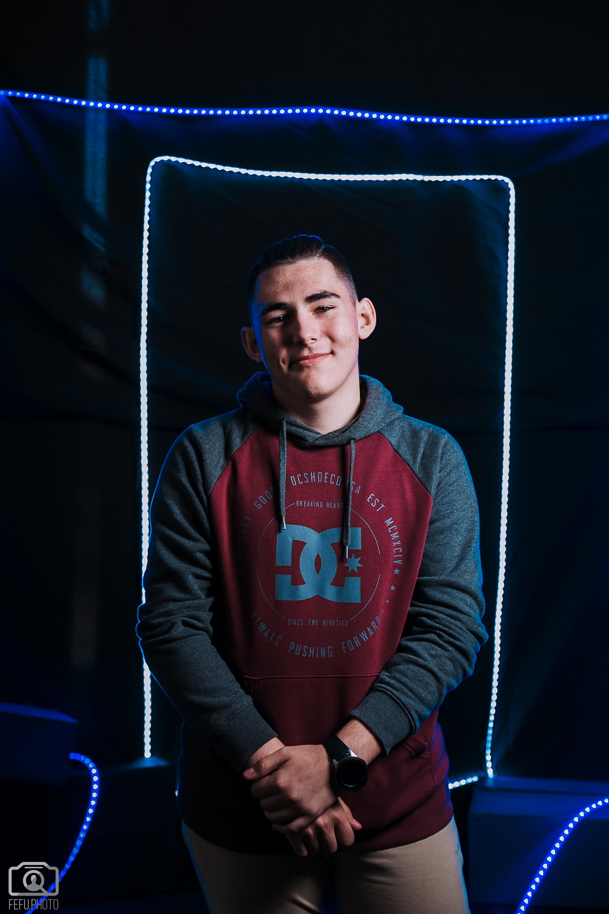

Студент Школы естественных наук Дальневосточного федерального университета Семен Викторович Середа за
время учёбы зарекомендовал себя способным студентом,a стремящимся к постоянному повышению своего уровня
знаний. Семен Викторович является постоянным участником технологических форумов.
Принимал участие и занимал призовые места в «Национальной технологической олимпиаде», на образовательном
интенсиве «Остров 10-22», с командой защитил проект по Дистанционному зондированию Земли. До поступления
в вуз принимал участие в Восточном Экономическом Форуме. С.В. Середа - активный участник хакатона Data
Science, проходившем на Russky MeetUp 2019. Посетил и успешно освоил интенсивы «IdLab. Владивосток» и
«Навигатор инноватора» Открытого Университета «Сколково».
Семен Викторович имеет неконфликтный характер, отличается высоким уровнем ответственности и
трудолюбия.
Выпускник Центра развития робототехники и студент Дальневосточного федерального университета.
Дважды становился победителем регионального этапа Всероссийской робототехнической олимпиады (2016 и 2018
гг), трижды победитель регионального этапа Робофеста (2017, 2018 и 2019 гг), серебряный призер
соревнований по шорт-треку, победитель финала Олимпиады НТИ (г. Томск, 2019 г.) по профилю «Умный город»
как в командном, так и в личном первенстве.